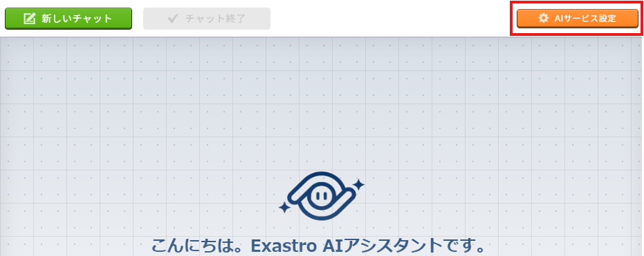
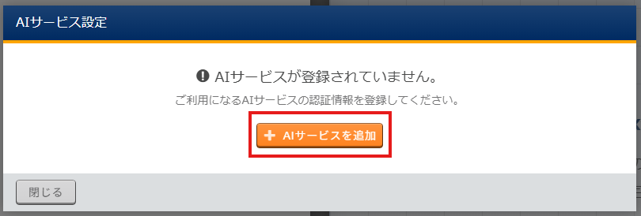
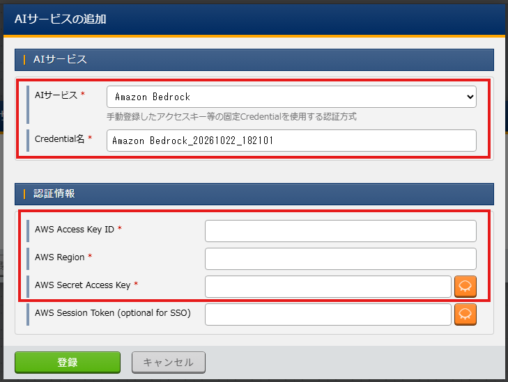
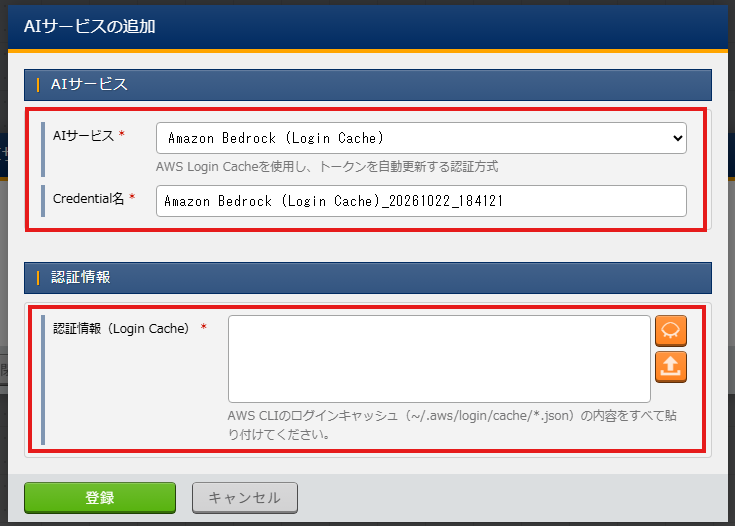
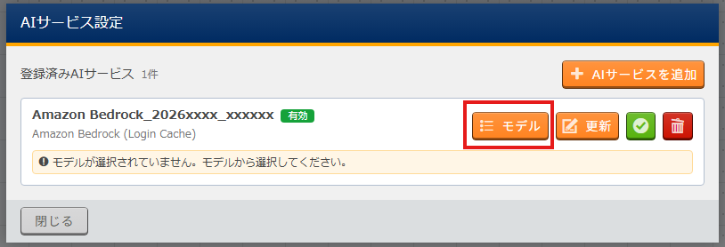
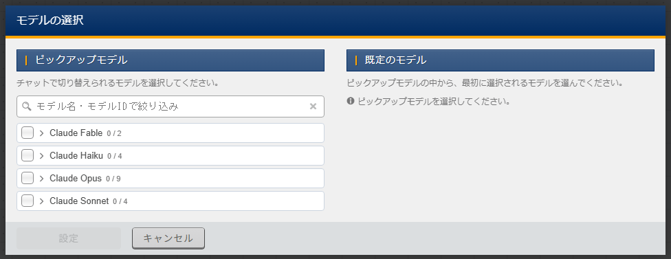
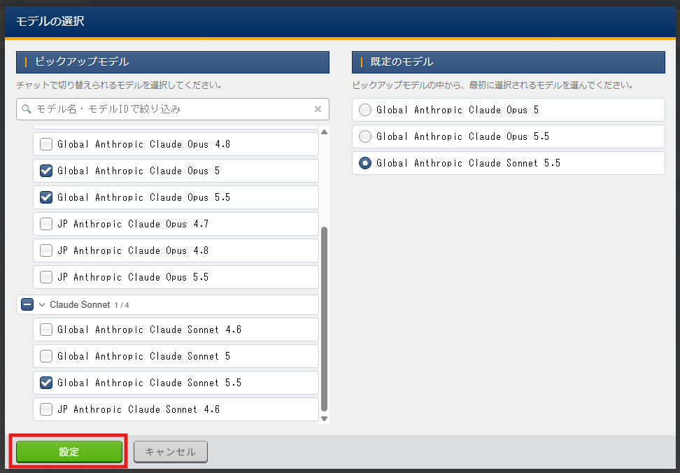

2. AIサービス設定¶
2.1. はじめに¶
本書では、AIアシスタント機能を利用する際に必要なAIサービスの設定について説明します。
AIサービスの設定はユーザー毎に実施する必要があります。
AIサービスの設定にはAIサービスの認証情報が必要です。事前に使用するAIサービスを準備してください。
2.2. AIサービス設定¶
2.2.1. AIサービス設定画面の起動¶
- AIアシスタントのメニューより、AIアシスタントの画面を起動します。または、Ansible Playbookなどのエディタ画面から、 ボタンをクリックしてAIアシスタントの画面を起動します。
注釈
AIアシスタントメニューが表示されていない、もしくはエディタ画面に ボタンが表示されていない場合、AIアシスタントの機能が無効化されています。有効化するにはシステム管理者にて、オーガナイゼーションの設定変更が必要になります。注釈
AIアシスタントの画面で、「ご用件を入力してください。」のテキストボックスが表示されている場合はAIアシスタントの設定は完了しています。 - AIサービス設定 ボタンをクリックします。

- AIサービスを追加 ボタンをクリックします。



2.2.2. AIサービスの追加・更新¶
準備したAIサービス毎に設定項目が異なります、準備したAIサービスの認証情報の設定を実施してください。
Tip
Amazon Bedrockをご利用の場合
ご使用のAWSのアカウントでアクセスキーの作成が行える場合はAIサービスに「Amazon Bedrock」を選択します。
アクセスキーの作成が行えない場合は「Amazon Bedrock (Login Cache)」を選択します。（ただしaws loginコマンドでログインできることが前提になります）
Amazon Bedrock¶
AIサービスに「Amazon Bedrock」をお使いで、アクセスキーの作成が行える場合こちらを使用します。
以下の項目を設定して 登録 ボタンをクリックします。


項目 |
内容 |
|---|---|
AIサービス |
Amazon Bedrock
|
Credential名 |
任意の名前
|
AWS Access Key ID |
AWSにて払い出したアクセスキー
|
AWS Region |
AWSのリージョン
|
AWS Secret Access Key |
AWSにて払い出したシークレットアクセスキー
|
Amazon Bedrock (Login Cache)¶
AIサービスに「Amazon Bedrock」をお使いで、アクセスキーの作成が行えない場合は「Amazon Bedrock (Login Cache)」を選択します。
※ただしaws loginコマンドでログインできることが前提になります。
以下の項目を設定して 登録 ボタンをクリックします。


項目 |
内容 |
|---|---|
AIサービス |
Amazon Bedrock (Login Cache)
|
Credential名 |
任意の名前
|
認証情報 (Login Cache) |
aws loginした後に作成されるjsonファイル(格納場所: ~/.aws/login/cache)
ファイルの内容を転記するか、 ボタンからファイルをアップロードします。
|
Tip
認証情報 (Login Cache)の取得方法
awsコマンドを実行可能なターミナル（Windowsの場合はPowerShell / Linuxの場合はsshで接続したターミナル）を起動します。
aws login --remote
画面の指示に従ってログインします。
cat ~/.aws/login/cache/*.json
画面に認証情報 (Login Cache)に設定する値が表示されます。
aws loginを複数のアカウントで実施している場合、~/.aws/login/cache配下に複数のjsonファイルが存在することがあります。
その場合は、aws loginした時間帯のjsonファイルを使用してください。
Tip
認証情報 (Login Cache)は一定時間で無効となります。有効期限が切れた場合は再設定してください。
2.2.3. モデルの設定¶
AIアシスタントで使う、AIのモデルを設定します。
AIアシスタントの画面の既定（デフォルト）のモデルや、会話中に切り替え可能なモデルの選択を行います。
- モデル ボタンをクリックします。

- モデルの選択画面が表示されます。

- ピックアップモデルで切り替え可能なモデルを選択し、既定のモデルを選択し、設定 ボタンをクリックします。
